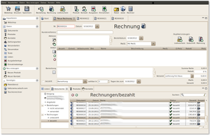

Fakturama
Dieser Artikel wurde für die folgenden Ubuntu-Versionen getestet:
Ubuntu 14.04 Trusty Tahr
Zum Verständnis dieses Artikels sind folgende Seiten hilfreich:
Fakturama  ist eine Büroanwendung zur Erstellung von Rechnungen, Lieferscheinen, Bestellungen, Mahnungen, Angeboten, Auftragsbestätigungen und mehr. Sie ist unter der freien Open-Source-Lizenz EPL v1.0 verfügbar. Fakturama basiert auf den folgenden Technologien:
ist eine Büroanwendung zur Erstellung von Rechnungen, Lieferscheinen, Bestellungen, Mahnungen, Angeboten, Auftragsbestätigungen und mehr. Sie ist unter der freien Open-Source-Lizenz EPL v1.0 verfügbar. Fakturama basiert auf den folgenden Technologien:
Funktionen¶
Erstellen von Rechnungen, Lieferscheinen, Bestellungen, Mahnungen, Angeboten, Auftragsbestätigungen
Adressdatenbank
Produktverwaltung
Erfassung von Einnahmen- und Ausgabenbelegen
Einfaches Erstellen von Dokumentvorlagen mit OpenOffice- / LibreOffice Writer
Export der monatlichen Einnahmen und Ausgaben
Import der Bestellungen und Produkte aus Webshops
Schnittstelle für folgende Webshop Systeme: osCommerce, xt:Commerce
und xtcModified Übertragung der Adressdaten an Paketdienste
Zielgruppe, Verwendung¶
Fakturama ist mandantenfähig, aber nicht mehrbenutzerfähig. Dadurch ist Fakturama nur für kleine Firmen mit einem aktiven Fakturierungs-/Buchhaltungsarbeitsplatz zu verwenden.
Durch die Erfassung von Einnahmebelegen sind Einzelhandelsgeschäfte, aber auch Dienstleister und Freiberufler in der Lage, Einnahmen zu dokumentieren, auch wenn nicht immer eine separate Rechnung erstellt wird (Kasseneinnahmen, Einnahmen gegen Beleg etc.).
Besonders gut ist Fakturama geeignet für Betreiber von Webshops. Über die Schnittstellen können Produkte und Preise in den Webshop und Bestellungen mit Kundenangaben in Fakturama geladen werden. Warenversender, ob Webshop oder anderer Bestelleingang, werden sich über die Schnittstelle zu den Paketdiensten freuen.
Vereine mit und ohne Wirtschaftsbetrieb können durch die Trennung des Wirtschaftsbetriebs in einen separaten Mandanten gut mit Fakturama arbeiten.
Abschlüsse, EÜR etc. sind nicht im Funktionsumfang, können aber durch Exportfunktionen unterstützt werden. Ein Verteilung der Buchungen auf Kontennummern (eine Art Kostenstellen) ist möglich.
Voraussetzungen¶
Fakturama erfordert eine Java-Laufzeitumgebung (JRE) und LibreOffice 4.
Installation¶
Das Programm ist kein Bestandteil der offiziellen Paketquellen.
Fremdpaket¶
Fakturama kann in einer 32-bit- oder 64-bit-Version als DEB-Paket heruntergeladen  und manuell installiert [1] werden.
und manuell installiert [1] werden.
Hinweis!
Fremdpakete können das System gefährden.
Aktualisierungen installieren¶
Direkt nach der Installation sollte Fakturama aktualisiert werden. Aktualisierungen werden normalerweise in Fakturama durch das Menü "Hilfe -> Check for Updates" installiert. Zur Zeit funktioniert das allerdings nicht. Zur Umgehung siehe unten unter Problembehebung.

Bedienung¶
Gestartet wird Fakturama nach der Installation aus dem Menü "Anwendungen -> Büro".
Erste Schritte¶
Hier die Schritte, um eine erste Rechnung zu erstellen. Dies ist in wenigen Minuten durchführbar.
Nach dem ersten Start muss ein Arbeitsverzeichnis angegeben werden. Dort werden die Daten und alle generierten Dokumente gespeichert.
Im Menü unter "Datei / Einstellungen" sollten alle Einstellungen durchgesehen und ggf. angepasst werden. Dies gilt insbesondere für die Firmendaten und Office.
Im Menü "Daten" und dann nacheinander "Steuersätze", "Zahlungsarten" und "Versandarten" überprüfen bzw. erfassen
Ggf. Konten für eine Verteilung der Buchungen (vergleichbar Kostenstellen) unter "Daten -> Listen" anlegen
Die Templates für die Dokumente können im Arbeitsverzeichnis im Ordner Vorlagen gefunden und mit OpenOffice oder LibreOffice verändert werden
Oben auf den Knopf für neue Rechnung klicken und die erste Rechnung erfassen, speichern und drucken
Kunden und Produkte können separat oder auch während der Erstellung einer Rechnung erfasst werden
Die Funktionen sind in der Regel selbsterklärend, ansonsten hilft das Handbuch und das Forum weiter.
Mandantenfähigkeit¶
Man kann mehrere Arbeitsverzeichnisse anlegen. Der Wechsel geschieht über das Menü unter "Datei -> Arbeitsverzeichnis wählen". Darüber ist eine Mandantenfähigkeit leicht zu erreichen.
Problembehebung¶
Installation von Aktualisierungen¶
Dazu muss man Fakturama mit Root-Rechten starten[3]. Dies erreicht man durch Öffnen eines Terminals[4] und Eingabe des folgenden Befehls:
sudo /usr/share/Fakturama/Fakturama
Dann gibt man ein temporäres Verzeichnis als Arbeitsverzeichnis an. Danach kann man die Anwendung durch Auswahl von "Hilfe -> Check for Updates" im Menü der Anwendung aktualisieren. Nach Installation der Aktualisierung kann man Fakturama beenden und wieder normal aus dem Menü starten.
Probleme mit LibreOffice 4¶
Achtung: mit LibreOffice 4 funktioniert Fakturama älter als Version 1.6 nicht.
Umgehung:
Apache OpenOffice parallel installieren ohne Desktop-Integration
in Fakturama in den Einstellungen Office-Pfad auf /opt/openoffice.org3 setzen
Damit kann man weiterhin mit LibreOffice 4 normal arbeiten, nur Fakturama druckt unter Verwendung von OpenOffice.
Eclipse Perspektive zurücksetzen¶
Da Fakturama auf Eclipse basiert, kann die Veränderung der Perspektive beim Arbeiten mit Eclipse dazu führen, dass diese Perspektive auch bei Fakturama verwendet wird. Man kann die Perspektive wieder zurücksetzen durch die Menüauswahl "Fenster -> Perspektive zurücksetzen".
Unity¶
Der Ubuntu Menuproxy funktioniert in älteren Versionen nicht mit Eclipse-basierenden Programmen wie Fakturama. Damit dies funktioniert muss die Datei /usr/share/applications/fakturama.desktop mit einem Editor mit Root-Rechten[3][5] bearbeitet werden. Zu ändern ist die Zeile
Exec=/usr/share/fakturama/Fakturama
in
Exec=env UBUNTU_MENUPROXY= /usr/share/fakturama/Fakturama
Nach dem Speichern kann Fakturama beim nächsten Start aus dem Menü aufgerufen werden. Wer Fakturama nicht aus dem Launcher oder Dash-Menu startet, sondern von der Kommandozeile aus, der muss vorher den folgenden Befehl ausführen.
export UBUNTU_MENUPROXY=0
Links¶
Dokumentation
- das Handbuch als PDF-Datei
Yabs - Rechnungs- und Buchhaltungssoftware für Kleinunternehmen

- Erstellt mit Inyoka
-
 2004 – 2017 ubuntuusers.de • Einige Rechte vorbehalten
2004 – 2017 ubuntuusers.de • Einige Rechte vorbehalten
Lizenz • Kontakt • Datenschutz • Impressum • Serverstatus -
Serverhousing gespendet von